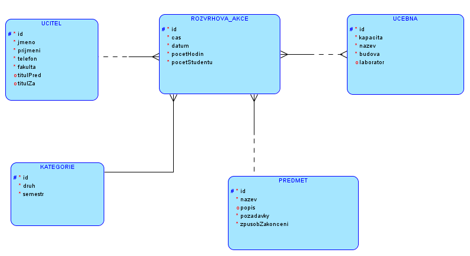

Výukový systém univerzity - projekt DORDB
Autor: David Baláček, David Halama
1. E-R diagram

2. Slovní popis dodatečných integritních omezení
2.1. Triviální integritiní omezení
- Tabulka UCITEL
- Atribut id - umělý primární klíč. Musí být jedinečný a nesmí být NULL.
- Atributy jmeno, prijmeni, telefon, fakulta nesmí být NULL.
- Tabulka KATEGORIE
- Atribut id - umělý primární klíč. Musí být jedinečný a nesmí být NULL.
- Atribut druh nesmí být NULL.
- Atribut semestr nesmí být NULL a musí být výčtu letní/zimní.
- Tabulka ROZVRHOVA_AKCE
- Atribut id - umělý primární klíč. Musí být jedinečný a nesmí být NULL.
- Atribut cas nesmí být NULL a musí být v rozmezí od 8:00 do 20:00.
- Atributy pocetHodin, pocetStudentu nesmí být NULL a nesmí být menší než nula.
- Tabulka PREDMET
- Atribut id - umělý primární klíč. Musí být jedinečný a nesmí být NULL.
- Atributy nazev, pozadavky nesmí být NULL.
- Atribut zpusobZakonceni nesmí být NULL a musí být výčtu zkouška/zápočet.
- Tabulka UCEBNA
- Atribut id - umělý primární klíč. Musí být jedinečný a nesmí být NULL.
- Atributy nazev, budova nesmí být NULL.
- Atribut kapacita, nesmí být NULL a musí být větší než nula.
2.1. Netriviální integritní omezení
- Tabulka REL_RA_UCEBNA
- Tabulka spojující učebnu a rozvrhovou akcí nesmí mít učebnu s menší kapacitou, než je počet studentů
rozvrhové akce.
- Rozvrhová akce nesmí obsahovat stejný datum a čas pro jednu učebnu, zároveň po celou dobu trvání rozvrhové
akce (indikátor - počet hodin na RA) nesmí být učebna
obsazena jinou rozvrhovou akcí. Trigger aplikovany na REL_RA_UCEBNA, před provázáním závislostí.
- Tabulka ROZVRHOVA_AKCE
- Učitel nesmí mít přiřazené dvě rozvrhové akce konající
ve stejný den a hodinu, opět s ohledem na rozsah - délku, rozvrhové akce. Trigger aplikovaný na tabulku
ROZVRHOVA_AKCE.
- Atribut datum nesmí být NULL a nesmí být v minulosti v porovnání s dnem insertu. Realizováno
triggerem, jelikož dle dokumentace oracle nepodporuje jednoduchý constrain.
- Všechny tabulky kromě REL_RA_UCEBNA
- Všechny tabulky mají vytvořený trigger, který před insertem ověří jestli je specifikováné ID, pokud je
identifikátor nespeficikován je ID samo doplněno pomocí sequence při insertu.
3. Slovní návrh API rozhraní „business logiky“
Vytvoření rozvrhové akce
Název: vytvor_rozvrhovou_akci
Parametry: cas (TIMESTAMP), datum (DATE), pocetHodin (NUMBER), pocetStudentu (NUMBER), ucitel_id,
ucebna_id, predmet_id, kategorie_id
Popis: Pocedura vytvoří nový záznam v tabulce ROZVRHOVA_AKCE za předpokladu, že jsou splněny
všechny podmínky. Zároveň vloží záznam do tabulky REL_RA_UCEBNA (M:N relace) a prováže všechny entity v modelu.
Vytvoření nového předmětu se závislostmi
Název: vytvor_novy_predmet
Parametry: ucitel_id, kategorie_id, ucebna_id, nazev (VARCHAR2), popis (VARCHAR2), pozadavky
(VARCHAR2), datumakci (DATE), zpusobZakonceni (VARCHAR2), delkaAkci (NUMBER), pocetStudentuRA (NUMBER)
Popis: Procedura vytvoří předmět a předmětu vytvoří tři akce o dané délce. Rozvrhové akce poté
naváže učiteli a zároveň zařadí do rozvrhu učebny.
Pokud učebna nemá dostatečné časové rozmezí pro rozvrhové akce, zahlásí procedura vlastní výjimku.
4. Pět slovně formulovaných dotazů nad schématem
- Seznam učitelů a jejich předmětů, počet hodin vyučujícího seřazeno podle předmětu
- Zobraz učebny a předměty vyučované v učebně
- Zobraz počet hodin vyučovanych předmetu v letním semestru a v zimním, spojene dohromady,
ale jen pro předměty, které mají naplanováno více jak tři rozvrhové akce
- Seznam odučenych hodin učitele za týden, tri mesice, rok od dnešního dne
- Zobraz učebny, kde je počet studentů menši jak půlka kapacity učebny
- Seznam učitelů a vyučovaných předmětů, které probíhají v zadaný čas, včetně délky hodiny
SQL skript:
sql_selects.sql
5. Skript, který vytvoří databázové schéma odpovídající E-R diagramu
SQL skript pro vytvoření struktury:
create_database_ddl.sql
SQL skript pro dropnutí struktury:
drop_database_ddl.sql
6. Skript, který vytvoří v databázovém schématu dodatečná integritní omezení
Skript pro vytvoření:
create_triggers.sql
Skript pro dropnutí:
drop_triggers.sql
7. Skript, který naplní tabulky testovacími daty
Skript pro insert dat:
insert_data.sql
Skript pro smazání dat:
delete_data.sql
8. Skript, který provede postupně všechny navržené dotazy z bodu 4
SQL skript:
sql_selects.sql
9. Skript, který se pokusí porušit všechna dodatečná integritní omezení
SQL skript:
try_triggers.sql
10. Skript pro vytvoření balíku (package) a procedur „business logiky“
Skript:
sql_procedury.sql
11. Ověření procedur „business logiky“
Skript:
business_logic_api.sql
12. Skript, který doplní do tabulky automaticky dopočítávaný sloupec
Skript:
add_new_column.sql
13. Skript, který vytvoří úložiště ještě jednou v „objektové“ podobě
Skript:
create_object_database.sql
14. Skript, který provede pět dotazů znovu, nad objektovými tabulkami
SQL skript:
object_sql_selects.sql
15. Navrhněte slovně fakta a dimenze pro datový sklad
Tabulky faktů:
ROZVRHOVA_AKCE
Tabulka dimenzí:
UCITEL, KATEGORIE, PREDMET
Možné analýzy:
- Nejčastěji vyučovaný předmět
- Který učitel nejvíce vyučuje
- Kolik má který učitel odučených hodin
- Nejčastěji se vyskytující kategorie
Skript pro vyčištění databáze
Skript:
drop_database_ddl.sql
{kind=link}